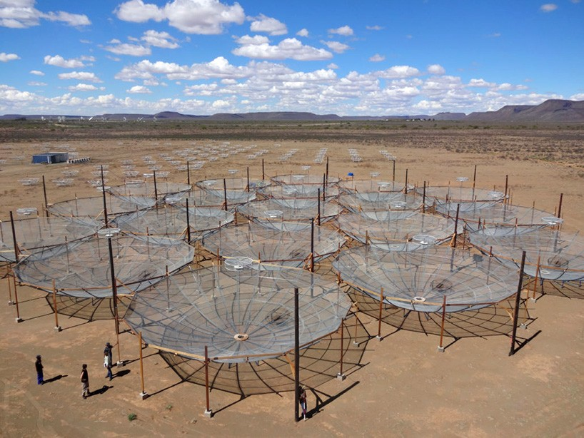

Samir Choudhuri
Post-Doctoral Fellow
School of Physics and Astronomy
Queen Mary University of London
Email: s.choudhuri@qmul.ac.uk

Post-Doctoral Fellow
School of Physics and Astronomy
Queen Mary University of London
Email: s.choudhuri@qmul.ac.uk
I am a Post-Doctoral Fellow at Astronomy Unit, Queen Mary University of London. Here, I am working with Dr. Phil Bull to study the early Universe using 21-cm radiation with the Hydrogen Epoch of Reionization Array (HERA). Before that, I was a Post-Doctoral Fellow at National Centre for Radio Astrophysics - TIFR, India from 2016-2019. I did my Ph.D. at Indian Institute of Technology, Kharagpur, (2011-2016) under supervision of Prof. Somnath Bharadwaj and Dr. Sk. Saiyad Ali. I have recived my M.Sc in Physics (2009-2011) from Jadavpur University, Kolkata. I am originally from a small and beautiful village (Lokepur) in West Bengal,India.
I am a radio astronomer, mainly interested in studying the large scale structure of Universe using 21-cm radiation. The details are my research area are given below:
Cosmology with 21-cm radiation using HERA and SKA
The Universe changes its phase from the completely neutral stage to ionization state by the radiation of the first source and galaxies. This is one of the important milestone in the evolution history named as the Epoch of Reionization (EoR). The 21-cm line emission from the neutral hydrogen (HI) is an important tool to study this epoch. A lot of astrophysical and cosmological information such as timing , duration of the epoch, the properties and the evolution of the first stars and galaxies can be revealed using this 21-cm line. The Hydrogen Epoch of Reionization Array (HERA) is the leading radio telescope of its kind in the world and the most sensitive for these studies. It is designed in such a way as to achieve the maximum sensitivity for the statistical detection in the presence of strong foregrounds, which are 4-5 order magnitudes brighter than the expected signal. The full HERA will be a redundant array with 350 parabolic dishes with a diameter of 14 m operating in the frequency range 50 to 250 MHz. The Square Kilometre Array (SKA) is another most sensitive radio telescope promised to produce an image of the different stages of the Universe (e.g. EOR). The SKA is one of the biggest international radio astronomy projects, which will start its construction phase in mid-2021. The SKA is expected to produce the early science results by 2024. I am member of both the HERA and the SKA and involved in statistical detection of the 21-cm signal using radio data.
A few dishes of the HERA (left) and the SKA (right).
Galactic Synchrotron emission at low frequency
The diffuse Galactic synchrotron emission (DGSE) is one of the most dominant foreground components for 21-cm EoR studies. A precise characterization and a detailed understanding of the DGSE are needed to model and remove it reliably. The DGSE is mainly produced by the cosmic ray electrons spiralling in the Galactic magnetic field line. The study of the DGSE is also important in its own right. The angular power spectrum of the DGSE quantifies the fluctuations in the magnetic field and in the electron density of the turbulent interstellar medium (ISM) ofour Galaxy. Although the DGSE has been studied quite extensively at higher frequencies, the properties of the DGSE are not well quantified at the frequencies and angular scales relevant for detecting the cosmological 21-cm signal from the EoR. We have studied the all-sky brightness temperature fluctuations of the DGSE using the TIFR GMRT Sky Survey (TGSS) at low radio frequency. We have used the Giant Metrewave Radio Telescope (GMRT) located near Pune, India to study the Galactic synchrotron emission at 150 MHz.
(Left) The brightness temperature fluctuations of the Galactic synchrotron emission (details in Choudhuri et. al (2020)). (Right) A few radio antennas of the Giant Metrewave Radio Telescope (GMRT) near Pune.
Study of the small scale fluctuations of the Supernova remnants
Supernova remnants (SNR) are the structures generated by the explosion at the end stage of a massive star. In this process,a tremendous amount of mass and energy is injected in the interstellar medium (ISM), and it causes the heating of the ISM. SNRs are studied at different frequency bands, and each frequency band gives a detail understanding of the properties and the physical processes involved within the SNRs. SNRs can be used to study the host galaxy as well as the local environment in different regions. We study the small scale fluctuations within the SNR which are mainly produced by the magnetohydrodynamic turbulence in the synchrotron emitting plasma. We are using both simulations and real data from to investigate the nature and origin of the small scale fluctuations of the SNRs.
My scientific publications are listed below. The complete list of publications can also be found in arXiv and Google Scholar.
21. Patterns of primary beam non-redundancy in close-packed 21 cm array observations
S. Choudhuri, P Bull, H Garsden
[arXiv; ADS]
20. The auto and cross angular power spectrum of the Cas A supernova remnant in radio and X-ray
P Saha, S Bharadwaj, S Chakravorty, N Roy, S. Choudhuri, HM Günther, et al.
[arXiv; ADS]
19. Stringent constraint on the radio signal from dark matter annihilation in dwarf spheroidal galaxies using the TGSS
A Basu, N Roy, S. Choudhuri, KK Datta, D Sarkar
[arXiv; ADS]
18. Demonstrating the Tapered Gridded Estimator (TGE) for the Cosmological HI 21-cm Power Spectrum using 150MHz GMRT observations
S Pal, S Bharadwaj, A Ghosh, S. Choudhuri
[arXiv; ADS]
17. First multi-redshift limits on post-Epoch of Reionization (post-EoR) 21 cm signal from z = 1.96 - 3.58 using uGMRT
A Chakraborty, A Datta, N Roy, S Bharadwaj, TR Choudhury, KK Datta, ..., S. Choudhuri, et al.
[arXiv; ADS]
16. Angular power spectrum of supernova remnants: effects of structure, geometry and diffuse foreground
S. Choudhuri, P Saha, N Roy, S Bharadwaj, J Dey
[arXiv; ADS]
15. Characterizing EoR foregrounds: A study of the Lockman Hole Region at 325 MHz
A Mazumder, A Chakraborty, A Datta, S. Choudhuri, N Roy, Y Wadadekar, ...
[arXiv; ADS]
14. All sky angular power spectrum: I. Estimating brightness temperature fluctuations using TGSS 150 MHz survey
S. Choudhuri, A Ghosh, N Roy, S Bharadwaj, HT Intema, SS Ali
[arXiv; ADS]
13. A study of Kepler supernova remnant: angular power spectrum estimation from radio frequency data
P Saha, S Bharadwaj, N Roy, S. Choudhuri, D Chattopadhyay
[arXiv; ADS]
12. Detailed study of ELAIS N1 field with the uGMRT -- II. Source Properties and Spectral Variation Of Foreground Power Spectrum from 300-500 MHz Observations
A Chakraborty, N Roy, A Datta, S. Choudhuri, KK Datta, P Dutta, et al.
[arXiv; ADS]
11. Detailed study of the ELAIS N1 field with the uGMRT - I. Characterizing the 325 MHz foreground for redshifted 21 cm observations
A Chakraborty, A Datta, S. Choudhuri, N Roy, H Intema, M Choudhury, et al.
[arXiv; ADS]
10. A Tapered Gridded Estimator (TGE) for the Multi-Frequency Angular Power Spectrum (MAPS) and the Cosmological HI 21-cm Power Spectrum
S Bharadwaj, S Pal, S. Choudhuri, P Dutta
[arXiv; ADS]
9. An Image-based Tapered Gridded Estimator (ITGE) for the angular power spectrum
S. Choudhuri, P Dutta, S Bharadwaj
[arXiv; ADS]
8. Turbulent power spectrum in warm and cold neutral medium using the Galactic HI 21 cm emission
S. Choudhuri, N Roy
[arXiv; ADS]
7. Validating a novel angular power spectrum estimator using simulated low frequency radio-interferometric data
S. Choudhuri, N Roy, S Bharadwaj, SS Ali, A Ghosh, P Dutta
[arXiv; ADS]
6. The angular power spectrum measurement of the Galactic synchrotron emission in two fields of the TGSS survey
S. Choudhuri, S Bharadwaj, SS Ali, N Roy, HT Intema, A Ghosh
[arXiv; ADS]
5. Imaging the redshifted 21 cm pattern around the first sources during the cosmic dawn using the SKA
R Ghara, TR Choudhury, KK Datta, S. Choudhuri
[arXiv; ADS]
4. Prospects of Measuring the Angular Power Spectrum of the Diffuse Galactic Synchrotron Emission with SKA1 Low
SS Ali, S Bharadwaj, S. Choudhuri, A Ghosh, N Roy
[arXiv; ADS]
3. The visibility-based tapered gridded estimator (TGE) for the redshifted 21-cm power spectrum
S. Choudhuri, S Bharadwaj, S Chatterjee, SS Ali, N Roy, A Ghosh
[arXiv; ADS]
2. Tapering the sky response for angular power spectrum estimation from low-frequency radio-interferometric data
S. Choudhuri, S Bharadwaj, N Roy, A Ghosh, SS Ali
[arXiv; ADS]
1. Visibility-based angular power spectrum estimation in low-frequency radio interferometric observations
S. Choudhuri, S. Bharadwaj, A. Ghosh, Sk. S. Ali
[arXiv; ADS]
This is a list of my conference proceedings.
3. Prospects of detection of the first sources with SKA using matched filters
R Ghara, TR Choudhury, KK Datta, G Mellema, S. Choudhuri, S Majumdar, SK Giri
[Proceedings of IAU (2018)]
2. The angular power spectrum measurement of the Galactic synchrotron emission using the TGSS survey
S. Choudhuri, S Bharadwaj, SS Ali, N Roy, HT Intema, A Ghosh
[Proceedings of IAU (2018)]
1. Foreground simulation and power spectrum estimation for 610 MHz GMRT observations
S. Choudhuri, S. Bharadwaj, Sk. S. Ali
[ASI (2014)]
I have developed scientific codes for my research purposes, and most of them are publicly available on Github. Some of my publicly-available codes written in C/Python are given below:
I taught few undergrad and postgrad course, also few advance couses during my academic carriers.
6. Basics of Radio Astronomy at QMUL (2021)
5. Advance course on Power Spectrum Estimation Techniques at Kodaikanal Solar Observatory (2018)
4. Tutorials on radio data analysis at Kodaikanal (2018), NCRA (2019), IIT Indore (2020)
3. Computational Physics Lab at IIT KGP (2013-2015, 3 Semesters)
2. Preparatory Physics Lab Class at IIT KGP (2012-2015, 5 Semesters)
1. Electrodynamics I, Tutorial at IIT KGP (2013)